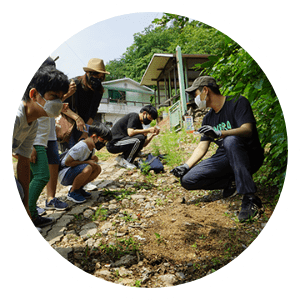
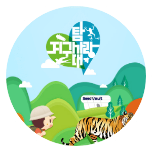
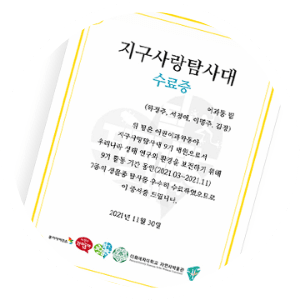
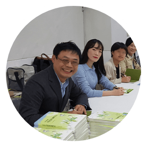
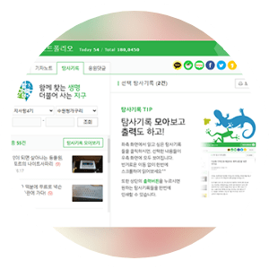
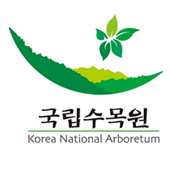
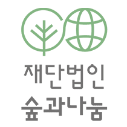

내 등록 상태
- 지구사랑탐사대 3기 수리수리팀
- 지구사랑탐사대 2기 수리수리팀
- 지구사랑탐사대 1기 수리수리팀
6기 등록 신청
※ 지구사랑탐사대 신청은
PC 홈페이지에서만 가능합니다.
6기 등록 신청심사중
탐발탐발 팀
지구사랑탐사대 6기 승인여부를 심사하고 있습니다. 승인된 분들에게는 SMS로 확인 안내를 드립니다.
탐사 티셔츠 안내
탐사 티셔츠는 현장교육, 여름캠프 등에서 입으실 수 있도록 지구사랑탐사대 를 상징하는 로고로 디자인 돼 있습니다.

탐사 티셔츠 구매는 선택사항이며 티셔츠 1장 당 정기구독자 10,000원, 비정기구독자 15,000원에 구매하실 수 있습니다.

※ 1~2cm 정도 오차가 있을 수 있습니다. 사이즈를 여유 있게 주문해 주세요.
아동용 사이즈
| 호수 | 14호 | 15호 | 16호 | 17호 | 18호 |
|---|---|---|---|---|---|
| 연령 | 3~4세 | 5~6세 | 7-8세초1 | 9-10세초2~3 | 11~12세초4~5 |
| 가슴둘레(cm) | 34 | 37 | 39 | 41 | 44 |
| 총기장(cm) | 46 | 49 | 52 | 56 | 59 |
성인용 사이즈
| 사이즈 | S90 | M95 | L100 | XL105 | 2XL110 | 3XL115 |
|---|---|---|---|---|---|---|
| 가슴둘레(cm) | 90 | 95 | 102 | 108 | 112 | 117 |
| 총기장(cm) | 64.5 | 67.5 | 70 | 73 | 75.5 | 78 |
6기 등록 신청결제대기중
탐발탐발 팀
결제를 완료하시면 지구사랑탐사대 6기로
최종 선발됩니다.
탐사 티셔츠 안내
탐사 티셔츠는 현장교육, 여름캠프 등에서 입으실 수 있도록 지구사랑탐사대 를 상징하는 로고로 디자인 돼 있습니다.
탐사 티셔츠 구매는 선택사항이며 티셔츠 1장 당 정기구독자 10,000원, 비정기구독자 15,000원에 구매하실 수 있습니다.

※ 위 사진의 탐사대원 티셔츠는 2017년도 제품입니다.
※ 1~2cm 정도 오차가 있을 수 있습니다. 사이즈를 여유 있게 주문해 주세요.
아동용 사이즈
| 호수 | 14호 | 15호 | 16호 | 17호 | 18호 |
|---|---|---|---|---|---|
| 연령 | 3~4세 | 5~6세 | 7-8세초1 | 9-10세초2~3 | 11~12세초4~5 |
| 가슴둘레(cm) | 34 | 37 | 39 | 41 | 44 |
| 총기장(cm) | 46 | 49 | 52 | 56 | 59 |
성인용 사이즈
| 사이즈 | S90 | M95 | L100 | XL105 | 2XL110 | 3XL115 |
|---|---|---|---|---|---|---|
| 가슴둘레(cm) | 90 | 95 | 102 | 108 | 112 | 117 |
| 총기장(cm) | 64.5 | 67.5 | 70 | 73 | 75.5 | 78 |
| 양하진 | |
|---|---|
| 정지원 | |
| 장원숙 | |
| 양진원 | |
| 총 4장 | 상품 30,000원 배송비 0원 |
| 총 결제금액 30,000원 | |
ㆍ입금자명은 대표자 이름으로 작성해주세요.
ㆍ입금 기한 내에 정확한 결제금액을 입금해 주세요.
ㆍ현금영수증 발급은 02-3148-0728 로 문의바랍니다.
6기 등록 신청입금대기중
탐발탐발 팀
결제가 예약되었습니다.
아래 계좌로 입금을 완료해주세요.
| 입금금액 | 33,000원 |
|---|---|
| 예금주 | 동아사이언스 |
| 입금은행 | 우리은행 |
| 계좌번호 | 870301-04-000103 |
| 입금기한 | 2017년 2월 28일(수) 자정까지 |
6기 등록 신청선발완료
탐발탐발 팀
지구사랑탐사대 6기로
최종 선발되었습니다.
6기 등록 신청미승인
탐발탐발 팀
어린이과학동아에서 검토한 결과,
지구사랑탐사대로 적합하지 않아
승인되지 않았습니다.
지구사랑탐사대 소개
지구사랑탐사대
함께 찾는 생명
더불어 사는 지구
국내 최고 생태학자들의 연구에 참여할 수 있는 지구사랑탐사대는 해마다 전국에서 약 3400명 이상 참여하는 시민참여과학 프로젝트 입니다.
지구사랑탐사대 대원이 되면 온 가족이 함께 생태 전문가와 자연을 탐사할 수 있습니다. 대원들이 스스로 생물을 찾고 기록하면, 그 자료로 연구가 진행됩니다. 수료한 대원은 어린이과학동아와 ‘이화여자대학교 자연사 박물관’에서 발급하는 인증서도 받을 수 있습니다.
2012년, 80여 명의 대원이 참여한 ‘수원청개구리 탐사대’로 시작해, 2013년부터 다양한 생물을 탐사하는 ‘지구사랑탐사대’로 활동을 시작했습니다. 지구사랑탐사대에 대한 뜨거운 반응에 힘입어 현재는 17종 이상 생물탐사를 진행하고 있습니다.
이렇게 대원들이 탐사를 통해 모은 자료는 과학자에게 연
구 자료로 제공되며, 과학자는 그 결과를 논문으로 발표
합니다. 2020년 이화여대 에코과학부 장이권 교수가 이
끈 공동연구팀은 지구사랑탐사대 닥터구리팀 유상홍 대
원이 익산에서 발견한 수원청개구리가 신종인 ‘노랑배청
개구리’라는 연구 결과를 발표했습니다. 더불어 2019년
지구사랑탐사대가 ‘서울시 환경상’ 최우수상을 수상하며
깨끗한 환경을 조성하고 보전하는 데 기여한 공로를 인정
받았습니다.
‘함께’ 생물을 찾고, ‘더불어’ 살아가는 방법을 실천하는
지구사랑탐사대의 활동은 지금도 전국 곳곳에서 계속되
고 있습니다.
-
현장교육
전국에서 진행되는 탐사 종별 현장교육 무료 참여
-
여름 캠프
온 가족이 함께하는 여름 캠프 참여
-
인증서 발급
어린이 과학동아, 이화여자대학교 자연사 박물관 발급 (수료대원 기준)
-
연구자의 특별 강연
생태 연구자의 특별 강연 우선 선발
-
생태 탐사 포트폴리오
정기 구독자는 1년 동안 올린 탐사기록을 내려받을 수 있는 포트폴리오 제공
-
어린이과학동아 어린이과학동아 · 어린이수학동아는 30여 년 동안 과학,수학 콘텐츠를 개발해 온 동아사이언스가 만드는 교육만화잡지 입니다. 만화의 상상력과 과학의 창의력을 바탕으로 어린이들에게 꿈과 희망을 키워주기 위해 앞장서고 있습니다. -
이화여자대학교 에코과학부 생명체들은 모두가 자기 나름대로의 방법으로 살아갑니다. 에코과학은 다양한 생명체들이 ＇어떻게’ 살고있는지, ‘왜’ 그렇게 살아가는지 궁금증을 가지고 연구하는 학문입니다. 장이권 교수님을 비롯해 많은 연구자들이 지구사랑탐사대의 탐사활동과 연구에 참여하고 있습니다. -

국립수목원 국립수목원은 우리나라 산림생물종을 조사, 수집, 분류, 보전하고 희귀한 생물종과 식물자원을 보전, 관리하기 위한 국내 최고의 산림생물종 연구기관입니다. 이유미 원장님을 비롯한 수목원의 많은 연구자들이 귀화식물 탐사와 연구에 도움을 주고 있습니다. -

재단법인 숲과나눔 (재) 숲과나눔은 가정, 일터, 지역사회의 환경이 숲과 같이 건강하고, 안전하며, 지속 가능한 곳이어야 한다는 우리 사회의 여망 이 모여 만들어진 비영리재단입니다. 환경 ·안전·보건 분야 연구자들이 시민과 함께 연구하며 성과를 도출하는 ‘시민과학풀씨’ 연구 프로젝트를 어린이과학동아와 함께 주최하고 있습니다.
- 12월
-
- 지구사랑탐사대 9기 온라인 강연 : ‘장이권 교수의 탐험일지’
- 11월
-
- 지구사랑탐사대 9기 수료식
- 지구사랑탐사대 9기 시민과학풀씨 '제3회 환경학술포럼' 참가
- 10월
-
- 지구사랑탐사대 9기 시민과학풀씨 2기 활동 마감
- 지구사랑탐사대 9기 생물종 찾기 미션 : 단풍위크
- 지구사랑탐사대 9기 라이브 탐사 현장 생중계 : 온 양천에서 만난 민물고기
- 9월
-
- 지구사랑탐사대 9기 사진전 개최
- 지구사랑탐사대 9기 우리동네 귀화식물 지도 만들기 프로젝트 개최 (국립수목원)
- 지구사랑탐사대 9기 새로운 탐사 생물종 추가: 단풍탐사
- 지구사랑탐사대 9기 온라인강연 : '단풍탐사 알록달록 단풍이 기후변화를 알려준다고?'
- 8월
-
- 지구사랑탐사대 9기 ＇국제 박쥐의 밤’ 행사 참가
- 지구사랑탐사대 9기 생물종 찾기 미션 : 매미
- 지구사랑탐사대 9기 라이브 탐사 현장 생중계 : 서울과 익산의 매미
- 7월
-
- 지구사랑탐사대 9기 온라인 강연 : ‘지사탐, 슬기로운 여름방학'
- 6월
-
- 지구사랑탐사대 9기 시민과학풀씨 2기 선발 및 활동 시작
- 5월
-
- 지구사랑탐사대 9기 시민과학풀씨 2기 모집
- 지구사랑탐사대 9기 생물종 찾기 미션 : 제비
- 지구사랑탐사대 9기 원데이 미션 소개 : 귀화식물(화요일), 개미(목요일), 거미(매달 8일), 박쥐(매달 30일)
- 지구사랑탐사대 9기 생물다양성의 날 깜짝 미션: 지사탐이 지구를 지키는 방법 알아보기
- 4월
-
- 지구사랑탐사대 9기 발대식(온라인)
- 지구사랑탐사대 9기 생물종 찾기 미션: 소리모아, 양서류
- 3월
-
- 지구사랑탐사대 9기 3440명 (1044팀) 선발
- 지구사랑탐사대 9기 온라인 강연: ＇개나리의 개화 시점은 지역별로 어떻게 다를까?’
- 지구사랑탐사대 9기 생물종 찾기 미션: 개나리데이
- 2월
-
- 지구사랑탐사대 9기 온라인 강연: ‘우리는 왜 지구사랑탐사대를 해야 할까요?’
- 1월
-
- 지구사랑탐사대 9기 모집
- 12월
-
- 지구사랑탐사대 8기 수료식
- 11월
-
- 지구사랑탐사대 시민과학풀씨 '제2회 환경학술포럼' 참가
- 지구사랑탐사대 8기 탐사력 골든벨
- 지구사랑탐사대 8기 온라인 강연 : 장이권 교수님이 들려주는 동물의 행동 생태학
- 10월
-
- 지구사랑탐사대 8기 시민과학풀씨 1기 활동 마감
- 지구사랑탐사대 8기 우리 동네 지도 만들기 프로젝트 개최 (국립수목원)
- 9월
-
- 지구사랑탐사대 8기 2020 바이오블리츠 코리아 참가
- 지구사랑탐사대 8기 온라인 강연 : 나비 '기후변화지표종 나비의 모니터링을 통한 한반도 기후변화 추이 분석'
- 지구사랑탐사대 8기 온라인 강연 : 개미 '작지만 거대한 거미'
- 지구사랑탐사대 8기 생물종 찾기 미션 : 나비, 개미
- 8월
-
- 지구사랑탐사대 8기 지구사랑탐사대 라이브
- 지구사랑탐사대 8기 온라인 강연 : 매미 '맴맴맴을 찾아서'
- 지구사랑탐사대 8기 생물종 찾기 미션 : 매미
- 7월
-
- 지구사랑탐사대 8기 온라인 강연 : 거미 '우리 주변에는 어떤 거미가 살고 있을까?'
- 지구사랑탐사대 8기 생물종 찾기 미션 : 달맞이꽃, 물새. 거미
- 6월
-
- 지구사랑탐사대 8기 현장교육 : 소리모아, 제비
- 지구사랑탐사대 8기 시민과학풀씨 1기 290명 선발 및 활동 시작
- 5월
-
- 지구사랑탐사대 8기 생물종 찾기 미션 : 개구리, 나비
- 지구사랑탐사대 8기 시민과학풀씨 1기 모집
- 4월
-
- 지구사랑탐사대 8기 생물종 탐사 위크
- 지구사랑탐사대 8기 생물종 찾기 미션 : 개나리, 직박구리, 왕개미
- 지구사랑탐사대 8기 2904명 선발
- 1월
-
- 지구사랑탐사대 8기 신종 '노랑배청개구리' 논문 발표(아마엘 볼체 교수)
- 지구사랑탐사대 8기 모집
- 12월
-
- 지구사랑탐사대 7기 조류 특별 강연 및 탐사 ‘윈터윙즈’ (아침고요수목원)
- 11월
-
- 지구사랑탐사대 수료식(제1회 시민과학축제)
- 지구사랑탐사대 7기 공생미생물 특별 실험(국립생태원)
- 10월
-
- 지구사랑탐사대 7기 생태 사진 특별 강연
- 지구사랑탐사대 7기 우리 동네 귀화식물 지도 프로젝트 개최 (국립수목원)
- 지구사랑탐사대 7기 귀화식물, 개미, 조류, 공생미생물 현장교육
- 지구사랑탐사대 7기 개미 특별 강연
- 9월
-
- 지구사랑탐사대 7기 가을캠프 (국립생태원)
- 지구사랑탐사대 7기 귀화식물 현장교육
- 지구사랑탐사대 7기 거미, 양서류, 선충 특별탐사
- 지구사랑탐사대 7기 공생미생물 특별 강연
- 8월
-
- 지구사랑탐사대 7기 여름캠프 (국립백두대간수목원)
- 지구사랑탐사대 7기 귀화식물, 매미 현장교육
- 지구사랑탐사대 7기 민물고기, 거미, 해수어 특별탐사
- 지구사랑탐사대 7기 선충 특별 강연
- 지구사랑탐사대 7기 귀화식물 특별 강연 (동아사이언스)
- 7월
-
- 지구사랑탐사대 7기 시민과학비교분석 논문 게재 (오통스 세레 연구원)
- 6월
-
- 지구사랑탐사대 7기 소리모아, 귀화식물, 조류, 개미, 화분매개자 현장교육
- 지구사랑탐사대 7기 매미, 특산식물, 제비 현장교육
- 지구사랑탐사대 7기 도룡뇽, 바닷물고기, 민물고기 특별탐사
- 지구사랑탐사대 7기 바이오블리츠 지구사랑탐사대 7기 참가
- 지구사랑탐사대 7기 소리모아, 화분매개자, 제비, 특산식물 현장교육
- 지구사랑탐사대 7기 제비 특별 강연 (동아사이언스)
- 5월
-
- 지구사랑탐사대 7기 수원청개구리 특별탐사
- 지구사랑탐사대 7기 소리모아 현장교육
- 지구사랑탐사대 7기 발대식 (이화여자대학교 대강당)
- 4월
-
- 지구사랑탐사대 7기 2521명 선발
- 1월
-
- 지구사랑탐사대 7기 모집
- 12월
-
- 지구사랑탐사대 수료식 (이화여자대학교)
- 심화프로그램 ‘탐험대학 프로젝트X : 늦털매미와 털매미 비교연구’ 종강
- 11월
-
- ‘지구를 위한 과학’ 정기강좌 ‘魚벤져스, 민물고기를 지켜라!’
- (공공그라운드)지구사랑탐사대 6기 연어, 개미 특별탐사
- 10월
-
- 심화 프로그램 ‘탐험대학 프로젝트X : 늦털매미와 털매미 비교연구’ 개강 ‘지구를 위한 과학’ 정기강좌 ‘매미 찾아 삼만리’ (공공그라운드)
- 우리동네 귀화식물 지도 프로젝트 개최 (국립수목원)
- 우리산림생물 바로알기 탐험대 지구사랑탐사대 6기 참가 (국립수목원)
- 지구사랑탐사대 6기 귀화식물 현장교육
- 지구사랑탐사대 6기 민물고기 특별탐사
- 9월
-
- ‘지구를 위한 과학’ 정기강좌 ‘새와 함께 날아오르다’ (공공그라운드)
- 지구사랑탐사대 6기 개미, 민물고기 특별탐사
- 지구사랑탐사대 6기 우수탐사대원 심화교육 (이화여자대학교 장이권 교수님 연구실)
- 8월
-
- ‘지구를 위한 과학’ 정기강좌 ‘제돌이와 함께 살아남기 - 제주편’
- (신도2리 연안생태학습장), 돌고래 특별 현장교육
- ‘지구를 위한 과학’ 정기강좌 ‘제돌이와 함께 살아남기 - 서울편’ (공공그라운드)
- 지구사랑탐사대 6기 화분매개자와 밀원식물, 매미, 조류 현장교육
- 지구사랑탐사대 6기 바닷물고기, 꿀벌(보라매공원), 도룡뇽 특별탐사
- 7월
-
- 지구사랑탐사대 6기 나비 (보라매공원), 하늘소 특별탐사
- 지구사랑탐사대 6기 매미 현장교육
- 6월
-
- 지구사랑탐사대 6기 제비, 귀화식물, 화분매개자와 밀원식물, 조류 현장교육
- 지구사랑탐사대 6기 민물고기 특별탐사
- 지구사랑탐사대 6기 하늘소 특별탐사
- 5월
-
- 바이오블리츠 코리아 지구사랑탐사대 6기 참가
- 지구사랑탐사대 6기 청개구리·수원청개구리, 제비, 화분매개자와 밀원식물, 조류 현장교육
- 지구사랑탐사대 6기 민물고기 특별탐사
- 4월
-
- 지구사랑탐사대 6기 수원청개구리 특별탐사
- 지구사랑탐사대 6기 소리모아 현장교육
- 지구사랑탐사대 6기 발대식 (이화여자대학교 대강당)
- 3월
-
- 지구사랑탐사대 6기 2131명 선발
- 1월
-
- 지구사랑탐사대 6기 모집
- 12월
-
- 지구사랑탐사대 5기 수료식(이화여자대학교)
- 11월
-
- 특별 탐사 프로그램 민물고기 현장교육
- 10월
-
- ‘지구를 위한 과학’ 정기강좌 3강 ‘지구에서 떠나는 화성 여행’ (엘리펀트스페이스)
- ‘지구를 위한 과학’ 메이커 프로젝트 최종 결과물 발표
- ‘우리동네 귀화식물 지도 프로젝트’ 개최 (국립수목원)
- 9월
-
- ‘지구를 위한 과학’ 메이커 프로젝트 중간 결과물 발표 (개포디지털혁신파크)
- 우리산림생물 바로알기 탐험대 지구사랑탐사대 5기 참가 (국립수목원)
- 지구사랑탐사대 귀화식물 심화 현장교육 (국립수목원)
- 지구사랑탐사대 5기 화문매개자와 밀원식물 현장교육
- 8월
-
- ‘지구를 위한 과학’ 정기강좌 2강 '비닐봉지, 바다거북을 사냥하다!’ (서울시 청년허브 미래청)
- 지구사랑탐사대 5기 우수 탐사대원 심화 현장교육 (이화여자대학교 가평수목원)
- 지구사랑탐사대 5기 매미 현장 교육 (7-8월)
- 7월
-
- 지구사랑탐사대 5기 매미 현장 교육 (7-8월)
- 특별 탐사 프로그램 민물고기 현장교육
- ‘지구를 위한 과학’ 메이커 프로젝트 오리엔테이션 (서울시립과학관)
- 6월
-
- ‘지구를 위한 과학’ 정기강좌 1강 ‘수리부엉이의 집은 몇 평?’(카우앤독)
- 지구사랑탐사대 5기 화분매개자와 밀원식물 현장교육 (보라매공원)
- 지구사랑탐사대 5기 귀화식물 현장교육
- 5월
-
- 바이오블리츠 코리아 지구사랑탐사대 5기 참가
- 지구사랑탐사대 5기 청개구리·수원청개구리, 제비, 화분매개자와 밀원식물·민물고기 현장교육
- 4월
-
- 지구사랑탐사대 5기 청개구리·수원청개구리, 제비, 화분매개자와 밀원식물·민물고기 현장교육
- 지구사랑탐사대 5기 발대식(국립과천과학관)
- 지구사랑탐사대 5기 1652명 선발
- 1월
-
- 지구사랑탐사대 5기 모집
- 12월
-
- 지구사랑탐사대 4기 수료식 (이화여자대학교)
- 10월
-
- 우리 산림생물 바로알기 탐험대 지구사랑탐사대 4기 참가 (국립수목원)
- 9월
-
- 지구사랑탐사대 4기 귀화식물, 민물고기 탐사 현장교육
- 8월
-
- 대한민국과학창의축전-사이언스페스타 지구사랑탐사대 4기 참가 (코엑스)
- 지구사랑탐사대 4기 상반기 우수탐사대원 심화교육 (이화여자대학교)
- 지구사랑탐사대 4기 매미, 노래곤충 탐사 현장교육
- 7월
-
- 지구사랑탐사대 4기 여름 숲 캠프 (북한산 생태탐방연수원)
- 6월
-
- 바이오블리츠 코리아 지구사랑탐사대 4기 참가
- 지구사랑탐사대 4기 귀화식물 탐사 현장교육
- 5월
-
- 지구사랑탐사대 4기 수원청개구리 탐사 패션쇼 개최 (온라인)
- 지구사랑탐사대 4기 제비, 청개구리·수원청개구리, 꿀벌 탐사 현장교육
- 4월
-
- 지구사랑탐사대 4기 제비 탐사 현장교육
- 지구사랑탐사대 4기 발대식 (국립과천과학관)
- 3월
-
- 지구사랑탐사대 4기 2314명 선발
- 1월
-
- 지구사랑탐사대 4기 모집